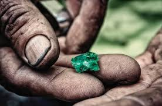
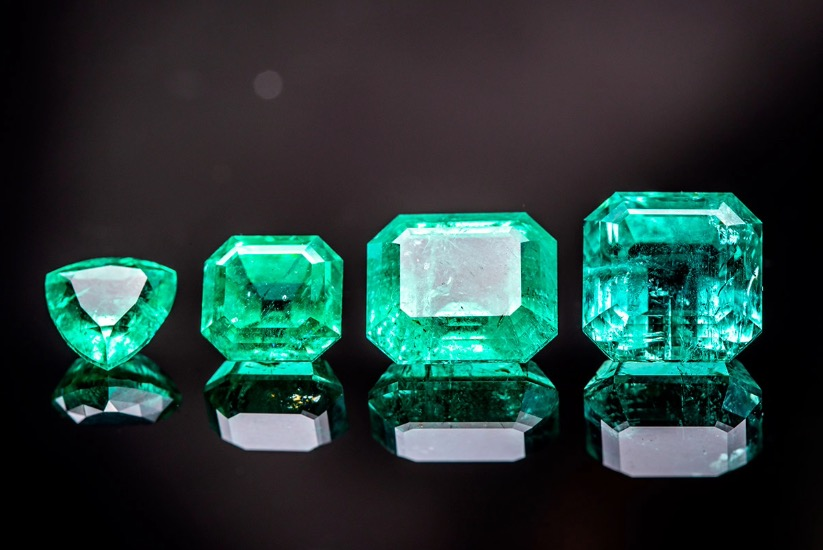

Producción
Colombia es reconocida mundialmente por sus esmeraldas de calidad excepcional. Las principales minas se encuentran en Muzo, Coscuez y Chivor, que producen esmeraldas con un color verde vibrante y una claridad única. Colombia lidera la industria debido a la combinación de condiciones geológicas perfectas y métodos tradicionales de extracción. La esmeralda colombiana es altamente apreciada en el mercado global, destacándose por su intensidad de color y su rareza. ¡Es el corazón de las mejores esmeraldas del mundo!

Tipos
Las esmeraldas se clasifican según su color y corte. En cuanto al color, destacan las esmeraldas verdes, que varían desde un verde claro hasta un verde intenso, y las esmeraldas azuladas, que tienen un toque de azul en su tono verde. En cuanto al corte, los más comunes son el corte esmeralda, rectangular o cuadrado con esquinas truncadas, que resalta su claridad, y el corte redondo, que maximiza el brillo de la piedra. También se encuentran cortes cabuchón, más suaves y redondeados, para resaltar su color.

Comercio
Destacan diferentes tipos según su origen, corte y calidad. Las esmeraldas colombianas son las más valoradas por su color verde vibrante y claridad, mientras que las zambianas se distinguen por su tonalidad verde más profunda y su mayor resistencia. Las esmeraldas brasileñas ofrecen una excelente transparencia y tonalidad, siendo muy demandadas por su belleza. Las tanzanas son raras y cotizadas por su verde oscuro único, y las afganas, aunque menos conocidas, son apreciadas por su rareza y su color verde claro.